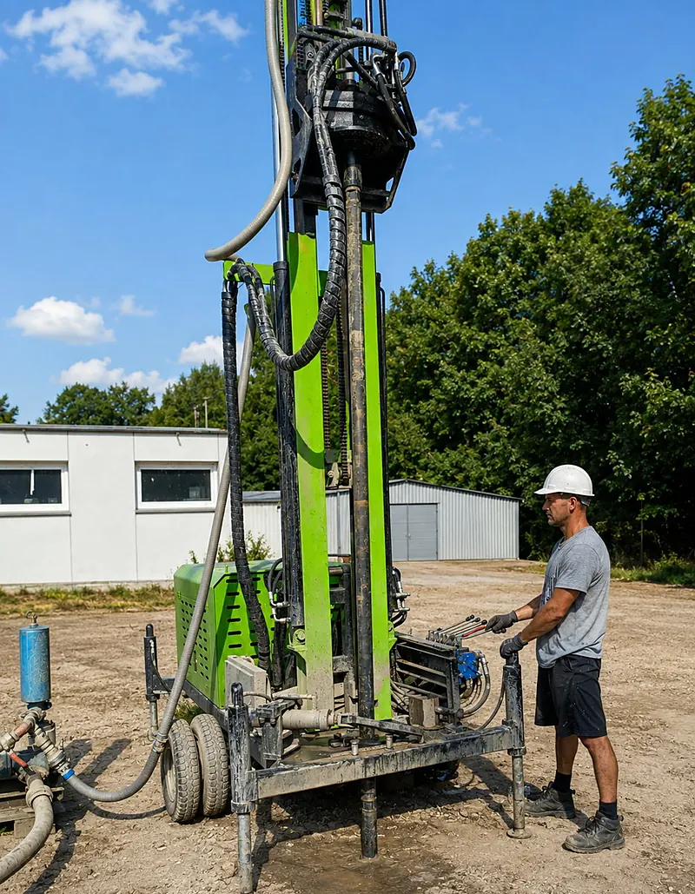

01
DEWAX EngineeringGruntowe pompy ciepła
Odwiert i pompa na jednej umowie. Wiercimy własnym sprzętem, montujemy i serwisujemy — od pierwszego metra po rozruch.
Wejdź
02
DEWAX PaintFarby dekoracyjne
Multilan — farba dekoracyjna imitująca granit. Trwałe, kamienne wykończenie ścian i elewacji.
Wejdź